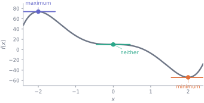
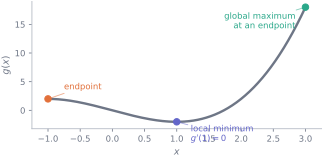
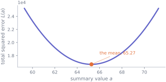

5. Finding the best value
Mathematics · Unit 5
Why this unit is here
Fitting a model means choosing the parameter values that make it least wrong. That is an optimisation problem, and this unit is where you learn to solve one.
The central fact is small and easy to misuse: at a peak or a trough of a smooth curve, the derivative is zero. What takes care is everything around it — because a zero derivative is a candidate, not an answer, and the best value is sometimes nowhere near one.
5.1 Before you start
You should be able to:
- differentiate using the rules, and factorise the result — M4;
- read \(f'(x)\) as a rate of change — M3.
Quick check. Differentiate \(f(x) = x^2 - 6x + 5\) and find where \(f'(x) = 0\).
TipShow the answer
\(f'(x) = 2x - 6\), which is zero at \(x = 3\).
That is the whole method in one line. The rest of this unit is about what \(x = 3\) actually is, and when this method misses the answer entirely.
5.2 The idea
At the top of a hill the ground is momentarily level. At the bottom of a valley it is level too. So if a smooth curve has a highest or lowest point somewhere in the middle of its range, the tangent there is horizontal — the derivative is zero.
A point where \(f'(x) = 0\) is called a stationary point. Finding them is easy. Deciding what they are is the work:
The middle one is the warning. Its tangent is horizontal, so \(f'(x) = 0\), and yet it is neither a peak nor a trough — the curve flattens and carries on in the same direction.
5.3 The mechanics
The second-derivative test
\(f''\) measures how the slope is changing, which is exactly what distinguishes a peak from a trough. If \(f'(c) = 0\) and \(f''\) is continuous near \(c\):
| \(f''(c)\) | curve bends | \(c\) is a |
|---|---|---|
| \(> 0\) | upwards | local minimum |
| \(< 0\) | downwards | local maximum |
| \(= 0\) | — | test says nothing |
def f(x): return x**2 - 6*x + 5
def f1(x): return 2*x - 6
def f2(x): return 2.0
print(f"f'(3) = {f1(3)}, f''(3) = {f2(3)} > 0 → minimum")
print(f"f(3) = {f(3)}")f'(3) = 0, f''(3) = 2.0 > 0 → minimum
f(3) = -4When \(f''(c) = 0\) the test is genuinely inconclusive — not “probably a minimum”. Both \(x^4\) (a minimum) and \(x^3\) (neither) have \(f'(0) = f''(0) = 0\):
for name, g in [("x^4", lambda x: x**4), ("x^3", lambda x: x**3)]:
left, centre, right = g(-0.1), g(0.0), g(0.1)
print(f"{name}: f(-0.1)={left:+.5f} f(0)={centre:+.5f} f(0.1)={right:+.5f}")x^4: f(-0.1)=+0.00010 f(0)=+0.00000 f(0.1)=+0.00010
x^3: f(-0.1)=-0.00100 f(0)=+0.00000 f(0.1)=+0.00100For \(x^4\) both neighbours are above the centre — a minimum. For \(x^3\) one is above and one below — neither. When the test fails, look at the values either side.
Local is not global
A local minimum is lower than its immediate neighbours. A global minimum is the lowest anywhere in the range you care about. They need not coincide, and the global one may sit at an endpoint, where the derivative is not zero at all:

The full procedure
To find the best value of \(f\) on an interval \([a, b]\), collect every candidate and compare:
- stationary points — where \(f'(x) = 0\);
- points where \(f'\) does not exist — corners, like \(|x|\) at 0;
- the endpoints \(a\) and \(b\).
Then evaluate \(f\) at all of them and pick the largest or smallest. That is the whole method, and steps 2 and 3 are the ones people skip.
def g(x): return x**3 - 3*x
def g1(x): return 3*x**2 - 3
candidates = [-1.0, 1.0, 3.0] # endpoints and the stationary point in range
for c in sorted(candidates):
print(f" x={c:>4} g(x)={g(c):>7.2f} g'(x)={g1(c):>6.2f}")
best = min(candidates, key=g)
print(f"\nlowest on [-1, 3]: x={best}, g={g(best):.2f}") x=-1.0 g(x)= 2.00 g'(x)= 0.00
x= 1.0 g(x)= -2.00 g'(x)= 0.00
x= 3.0 g(x)= 18.00 g'(x)= 24.00
lowest on [-1, 3]: x=1.0, g=-2.00A detail worth noticing. \(g'(x) = 3x^2 - 3\) is zero at \(x = \pm 1\), so both are stationary points — and \(x = -1\) happens also to be the left endpoint, so it arrives on the list twice over. Only \(x = 1\) is a genuinely interior stationary point, and it is not the answer: the largest value sits at \(x = 3\), where the derivative is \(24\).
5.4 Worked example
Fitting a one-parameter model by calculus.
Suppose you must summarise a set of scores with a single number \(a\), and you choose \(a\) to make the total squared error as small as possible:
\[ L(a) = \sum_{i=1}^{n} (x_i - a)^2 \]
Differentiate with respect to \(a\), using the chain rule on each term:
\[ L'(a) = \sum_{i=1}^{n} 2(x_i - a)(-1) = -2\sum_{i=1}^{n}(x_i - a) \]
Set it to zero:
\[ \sum_{i=1}^{n}(x_i - a) = 0 \implies \sum x_i = na \implies a = \frac{1}{n}\sum x_i = \bar{x} \]
The best single summary, in the squared-error sense, is the mean. That is not a definition — it is a result, and this is where it comes from.
Confirm it is a minimum rather than a maximum:
\[L''(a) = 2n > 0\]
Positive for any \(n\), so it curves upwards everywhere: one stationary point, and it is the global minimum.
import numpy as np
import pandas as pd
cohort = pd.read_csv("data/cohort.csv")
scores = cohort["final_score"].dropna()
scores = scores[scores.between(0, 100)].to_numpy()
def loss(a):
return ((scores - a)**2).sum()
grid = np.linspace(scores.mean() - 6, scores.mean() + 6, 400)
best = grid[np.argmin([loss(a) for a in grid])]
print(f"mean of the data {scores.mean():.4f}")
print(f"grid search minimum {best:.4f}")
print(f"agree to 2 dp: {np.isclose(scores.mean(), best, atol=0.05)}")mean of the data 65.2718
grid search minimum 65.2568
agree to 2 dp: True
Change the loss and you change the answer. Minimising the sum of absolute errors gives the median instead — a different summary, from a different choice about what “wrong” means. The mean is not neutral; it is the answer to one specific question.
5.5 Try it yourself
Exercise 1 Find and classify the stationary points of \(f(x) = x^3 - 3x^2 + 4\).
TipShow the solution
\(f'(x) = 3x^2 - 6x = 3x(x - 2)\), so stationary points at \(x = 0\) and \(x = 2\).
\(f''(x) = 6x - 6\):
- \(f''(0) = -6 < 0\) → local maximum, \(f(0) = 4\).
- \(f''(2) = +6 > 0\) → local minimum, \(f(2) = 0\).
Note neither is global over all of \(\mathbb{R}\): \(x^3\) dominates, so \(f \to +\infty\) and \(-\infty\) at the ends. “Global” needs an interval to be global over.
Exercise 2 Find the global minimum of \(f(x) = x^2\) on \([1, 4]\). Why is the method of setting \(f'(x) = 0\) misleading here?
TipShow the solution
\(f'(x) = 2x = 0\) gives \(x = 0\) — which is not in \([1, 4]\), so it is not a candidate at all.
The candidates are the endpoints: \(f(1) = 1\) and \(f(4) = 16\). The global minimum is \(1\), at \(x = 1\).
The trap is reporting \(x = 0\) because the algebra produced it. Always check that a stationary point lies inside the interval before treating it as a candidate.
Exercise 3 \(f(x) = x^4\) has \(f'(0) = 0\) and \(f''(0) = 0\). What kind of point is \(x = 0\), and how would you decide without the second-derivative test?
TipShow the solution
A minimum — in fact the global one, since \(x^4 \geq 0\) with equality only at zero.
Two ways to decide when the test is silent:
- Evaluate either side. \(f(-0.1) = f(0.1) = 0.0001 > 0 = f(0)\), so the centre is lower than both neighbours.
- Check the sign of \(f'\). \(f'(x) = 4x^3\) is negative for \(x < 0\) and positive for \(x > 0\): the function falls then rises, which is a minimum.
The second is more reliable, because it examines a whole neighbourhood rather than two arbitrary points.
5.6 Check it in Python
Check a stationary point numerically before trusting your algebra:
def f(x): return x**3 - 3*x**2 + 4
def f1(x): return 3*x**2 - 6*x
def centred_difference(g, x, h=1e-6):
return (g(x + h) - g(x - h)) / (2*h)
for c in (0.0, 2.0):
print(f"x={c}: symbolic f'={f1(c):+.6f} numerical {centred_difference(f, c):+.6f}")x=0.0: symbolic f'=+0.000000 numerical +0.000000
x=2.0: symbolic f'=+0.000000 numerical +0.000000Check the classification by looking either side — the method that still works when the second-derivative test is silent:
def classify(g, c, h=1e-3):
left, centre, right = g(c - h), g(c), g(c + h)
if left > centre < right:
return "minimum"
if left < centre > right:
return "maximum"
return "neither"
for name, g, c in [("x^3-3x^2+4 at 0", f, 0.0), ("x^3-3x^2+4 at 2", f, 2.0),
("x^4 at 0", lambda x: x**4, 0.0),
("x^3 at 0", lambda x: x**3, 0.0)]:
print(f" {name:<20} {classify(g, c)}") x^3-3x^2+4 at 0 maximum
x^3-3x^2+4 at 2 minimum
x^4 at 0 minimum
x^3 at 0 neitherBoth cases the second-derivative test cannot resolve are settled in one line.
And search the whole interval, so an endpoint answer cannot be missed:
def g(x): return x**3 - 3*x
grid = np.linspace(-1, 3, 2001)
values = g(grid)
print(f"lowest {values.min():.3f} at x={grid[values.argmin()]:.3f}")
print(f"highest {values.max():.3f} at x={grid[values.argmax()]:.3f}")lowest -2.000 at x=1.000
highest 18.000 at x=3.000A grid search is not a substitute for the calculus — it cannot prove anything and it misses features between grid points. But it is an excellent way to find out that your algebra disagrees with the function.
5.7 Common wrong turns
Where this usually goes wrong
- Treating \(f'(c) = 0\) as proof of a minimum
- It is a candidate. It may be a maximum, or neither, and the global answer may be somewhere else entirely.
- Forgetting the endpoints
- On a closed interval the best value is very often at an end, where the derivative is not zero. It never appears in the algebra; you must add it.
- Using a stationary point outside the interval
- \(f'(x) = 0\) at \(x = 0\) is irrelevant if you are working on \([1, 4]\). Check membership before treating it as a candidate.
- Reading \(f''(c) = 0\) as “probably a minimum”
- It says nothing at all. Look at the values or the sign of \(f'\) either side.
- Missing points where \(f'\) does not exist
- \(|x|\) has its minimum at a corner, where there is no derivative to set to zero. Non-differentiable points are candidates too.
- Forgetting that the loss defines the answer
- Minimising squared error gives the mean; minimising absolute error gives the median. The summary you get is a consequence of the loss you chose.
5.8 Check yourself
Answers are at the foot of the page.
\(f'(c) = 0\) and \(f''(c) < 0\). What is \(c\)?
- local minimum
- local maximum
- neither
- cannot tell
A negative second derivative means the slope is decreasing. Sketch a curve whose slope goes from positive, through zero, to negative.
The second-derivative test is only inconclusive when \(f''(c) = 0\). Here it is negative.
The test only fails to decide when \(f''(c) = 0\). Here it is negative.
- Name the three kinds of candidate for a global extremum on \([a, b]\).
- Why does \(f''(c) = 0\) leave the question open? Give two functions that show it.
- Minimising \(\sum(x_i - a)^2\) gives the mean. What does minimising \(\sum|x_i - a|\) give?
- You are told the minimum of \(f(x) = x^2\) on \([2, 5]\) is at \(x = 0\). What went wrong?
TipShow the answers
(b) a local maximum. Negative second derivative means the curve bends downwards, so the stationary point is a peak.
Stationary points inside the interval; points where \(f'\) does not exist; and the two endpoints.
Because both a genuine extremum and a non-extremum can have zero second derivative. \(x^4\) has \(f'(0) = f''(0) = 0\) and a minimum at 0; \(x^3\) has the same derivatives at 0 and no extremum there.
The median. Different loss, different summary — which is the point: the mean is the answer to one specific question about what “wrong” means.
\(x = 0\) is not in \([2, 5]\), so it was never a candidate. The minimum is at the endpoint \(x = 2\), giving \(f(2) = 4\).